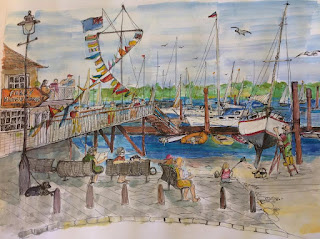
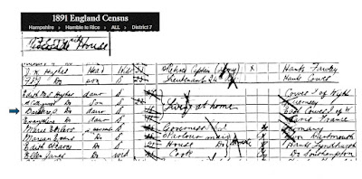
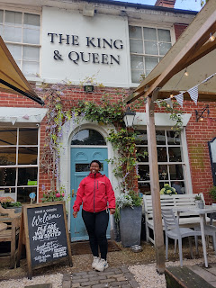
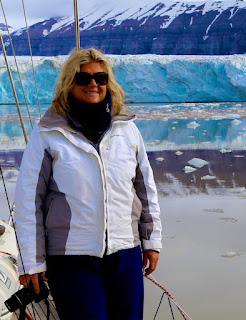
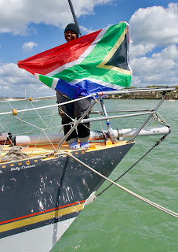
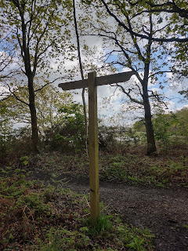
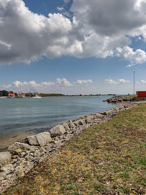

I should have come by boat, of course. The one-way street leading down to the river at Hamble-le-Rice, near Southampton, is as narrow and steep as anyone might expect, who knows the ways of riverside villages. I thought of Pin Mill, I thought of Wivenhoe and Maldon. You can probably think of many more. Then, like all the other riverside towns and villages which you might have in your mind’s eye, I was suddenly there, by the water. The public hard stretched in front of me, a yacht club to the left and an utterly lovely 1960s ocean racing yacht doing an utterly incredible 21st century 180º pivot in her own length to reverse smoothly into her pontoon slot, just as the sun went over the yardarm.
 |
| The Yacht Club at the end of the High Street by Janet Bradley |
{kind=link}
I’d come to Hamble to have lunch with Vuyisile
Jaca, who was part of the winning Maiden team in the recent Ocean Globe
Race – and also the first Black African woman ever to race around the world. I
wanted to say goodbye before she returned home, and I also hoped I might
catch a glimpse of Maiden, now officially retired from global racing and
back in her own home port. I wondered whether there might be something here
that would make a good last chapter for my almost finished book That Spirit of Independence; celebrating c20th British women sailors.
I’d also arrived at a place very close to the book’s
beginning. As I parked my car I noticed a sign for the Ferry. Hadn’t
Barbara Hughes, the 1880s-1890s Solent racer who’d given me the book’s title,
lived somewhere near here? Barbara had written about the equality that is (theoretically)
possible when racing on the water and also the joy of being in charge of her
own vessel,
{kind=link}
 |
| 1891 census The Hughes's household, Ferryside House, Hamble |
{kind=link}
 |
| Vuyisile Jaca at the King & Queen pub |
{kind=link}
Her story is a remarkable one: an orphan from uMzinto,
KwaZuluNatal, sent to live with relatives in a township outside Durban, brought
up to fear water, yet finding her vocation in sailing. (She has also learned to
swim and to dive and helps others to get over their culturally-engrained fear.)
She is a remarkable person, someone who I feel proud to know. Now she was about
to return to Durban, needing to continue to earn a living and take the next
steps in her career, but also determined
to use her experience to encourage other young women to follow their dreams.
I also met Janet Bradley, the landlady of the King & Queen. She too was from
South Africa, older than Vuyie and with a diametrically different childhood.
Janet grew up in the era of apartheid (1948-1994) which had ended before Vuyie
was born, though its shameful effects seem likely to blight generations to
come. Janet had grown up (white) in East London, always on the beautiful Nahoon
beach until she became the first paid female lifeguard
in her municipality (there was some slight awkwardness as the official lifeguard
uniform was a pair of red ‘speedo’ swimming trunks…) She was able to tell me about the wildness of
the Indian Ocean and explained the truly challenging nature of the Vasco Da
Gama race, from Durban to East London, in which Vuyie had sailed as part of the
first all-Black crew, supported by the charity SailAfrica. She spelled out what an
impressive achievement this had been.
Janet herself didn’t begin to sail until she was 30 – five years older that Vuyie is now – and then
it was almost an accident. She had injured her shoulder, surf-lifesaving and
was offered a lift on a Wharram catamaran. From then she was hooked. She spent
9 years racing from Algoa Bay YC, Part Elizabeth (more wild seas) and, when she
finally left the country to emigrate to England with her two children, she decided
to come to Hamble, believing it to be ‘the centre of yachting in the universe.’
Here, she took every opportunity she could to sail, cross-Channel races, local
races, Round the Island races. She was almost always the only woman among all-male crews –
as she had also been in South Africa. Her big break came when the top American
yacht Team Adventure, competing in The Race in 2000, needed someone with
rough sea experience and also a teaching qualification to help deliver their individual
mix of speed-record-breaking and education. She was the only British person on
board.(She'd changed nationality by then.)
 |
| Janet Bradley in Svalbard. Now her hard racing days are done she's more interested in the skills of cruising |
{kind=link}
Maiden was the only British entry in the 2023/24 Ocean Globe
Race. Vuyie told me what a responsibility they had felt, at the start of the
race, from Cowes, last September. Now that they have won, they are not only the
first all-female team ever to win a global race, Maiden is also the
first British yacht to win any major offshore race since Robin Knox-Johnston won
the Golden Globe race with Suhaili in 1968.
 |
| Vuyie in Cowes |
{kind=link}
The King & Queen pub has won international awards as one of the world’s favourite yachting bars. But if Barbara Hughes was to walk in here now, what would she think? Would we even persuade her through the door: ‘ladies’ in Barbara’s day were rarely allowed into sailing clubs, let alone pubs. Pubs were working men's spaces. The deep cool cellar at the King & Queen was occasionally used to store the bodies of fishermen who had died at sea. Now when you go down to find the loo, there's a nice little bookshelf on the stairs, with a scattering of Virago modern classics. I remembered what a spirit Barbara had showed in her own time. She was an 1890s 'New Woman' with attitude. Of course she'd have enjoyed the casual friendliness of the modern pub, with Janet and Ashley and Merf and I sitting round a table, eating lunch instead of up at the bar downing pints -- though she might have stuck her straight little nose in the air and arched those well-marked eyebrows at our casual clothes and the lack of a launder tablecloth.
Vuyie, as a sailor, would have been completely beyond Barbara's frame of reference. She's a pioneer even now. But
what if they had met on the river? They wouldn't have time to consider their differences then, they'd be too busy dealing with the wind and tide conditions and the needs of their yachts.
 |
| From Hamble village to Hamble Point |
{kind=link}
Later in the afternoon I walked across the common to Hamble Point Marina and watched the Sunday sailors coming home. I could see Maiden lying on the far side of a pontoon with a couple of crew members still working on her. 'We want to leave her in the best condition possible,' said skipper Heather Thomas, 'She's not only our 13th crew member, she's a part of national history.'
I think what I have learned from the process of looking at the twentieth century women sailors by starting in the c19th and finishing (or trying to) in 2024, is that people’s individual stories are like the cross-hatchings of a breeze that may or may not be blowing in the same direction as the current. I’ve also learned that these stories (experiences) keep on coming. Like waves. You can draw a line at the bottom of a page or sound a hooter to say FINISH at the end of a race. But people move on, they take the tide, catch the wind in their sails again and there's no such thing as a last chapter.
 |
| The End? Hardly. |
{kind=link}